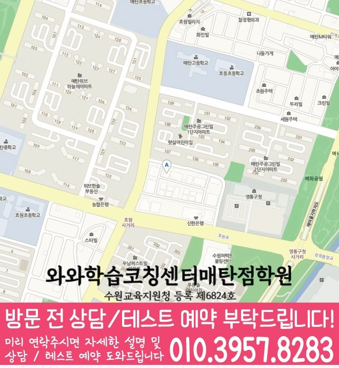

HIGH SCHOOL MATH
권선동 고등 수학학원
권선동 고등 수학학원 선택 전 반복보다 공부 흐름을 점검하는 방법, 수학 학습 루틴과 오답 원인·재풀이 점검, 내신·모의고사 계획과 센터 정보를 확인하세요.
01 Quick answer
권선동 고등 수학: 반복보다 공부 흐름을 점검하는 방법
이 페이지는 권선동 학생의 ‘반복보다 공부 흐름을 점검하는 방법’을 자료·행동·재확인의 순서로 정리합니다. 현재 상태: 최근 시험지에서 ‘주간 계획표, 시작·완료 시각과 다음 날 남은 질문’과 ‘첫 풀이, 오류 원인 표시와 해설을 덮고 다시 푼 풀이의 차이’가 드러난 위치를 한 곳씩 표시하세요. 연습 방법: 이번 주에는 ‘새 문제·오답 재풀이·질문 정리를 다른 칸에 두고 완료 근거를 한 줄로 남기기’를 먼저 하고 ‘오답을 개념·조건·계산·시간으로 분류하고 같은 날 수정과 며칠 뒤 새 문제 확인을 나누기’는 별도 문제에서 연습하세요. 확인 기준: 다음 점검에서 ‘한 주 뒤 미완료 이유와 반복 오답을 바탕으로 분량과 난도를 조정하는지’와 ‘정답을 기억하지 않은 상태에서 비슷한 문제의 풀이 순서를 다시 설명하는지’에 학생이 직접 답하는지 확인하세요.
확인 기준
권선동 학생의 한 가지 병목과 수학 학습 루틴의 첫 행동, 오답 원인·재풀이를 다시 확인할 날짜가 분명해야 계획을 비교할 수 있습니다.



010-6839-8283학습 답변 요약
핵심 주제는 ‘반복보다 공부 흐름을 점검하는 방법’입니다. 수학 학습 루틴과 오답 원인·재풀이의 출발 상태를 확인하고 계산 정확도와 서술형 풀이의 실행 기록과 학교·센터 사실을 분리해 살펴봅니다.
권선동 고등 수학 진단: 반복보다 공부 흐름을 점검하는 방법
권선동에서 고등 수학 계획을 세울 때 ‘반복보다 공부 흐름을 점검하는 방법’을 첫 질문으로 둡니다. ‘계획한 문제 수가 실제 완료·질문·오답 재확인 기록으로 이어지는지’가 실제 자료에서도 드러나는지부터 확인하세요.
끝으로 ‘틀린 문제를 다시 풀어도 개념·조건·계산 중 원인을 구분하지 않아 같은 실수가 남는지’를 확인해 단순 실수와 반복되는 병목을 구분하고 수학 학습 루틴에 설명이 필요한지, 오답 원인·재풀이를 혼자 연습할지 판단하세요.
수학 학습 루틴과 오답 원인과 재풀이의 풀이 기록을 비교하는 방법
진단 자료에서는 ‘주간 계획표, 시작·완료 시각과 다음 날 남은 질문’과 ‘첫 풀이, 오류 원인 표시와 해설을 덮고 다시 푼 풀이의 차이’를 한 곳씩 표시하고 자료 위치·날짜·처음 판단한 이유가 달라진 지점을 남기세요.
첫 기록과 재풀이 기록을 비교할 때는 ‘한 주 뒤 미완료 이유와 반복 오답을 바탕으로 분량과 난도를 조정하는지’에 답한 근거와 ‘정답을 기억하지 않은 상태에서 비슷한 문제의 풀이 순서를 다시 설명하는지’의 변화를 함께 봅니다. 그 차이로 계속 보완할 부분을 판단하세요.
시험 전후 수학 학습 루틴과 오답 원인과 재풀이의 비중을 조정하는 방법
내신 기간에도 누적 학습을 완전히 멈추지 마세요. ‘내신 기간의 집중 과제와 평소 누적 문제를 달력에서 분리하는 기준’과 ‘내신 범위 오답과 모의고사 누적 오답의 재확인 날짜를 다른 일정으로 관리하는 기준’을 살펴 학교 범위와 처음 보는 문제에 필요한 시간을 따로 남깁니다.
주간 계획에는 수학 학습 루틴과 오답 원인·재풀이의 최소 행동을 각각 한 줄로 남깁니다. 시험 뒤에는 점수보다 근거·시간·독립 수행 기록의 변화를 비교하세요.
시험 달력에는 ‘반복보다 공부 흐름을 점검하는 방법’에 필요한 수학 학습 루틴 확인일과 오답 원인·재풀이 다음 점검일을 따로 표시하세요. 시험 뒤 두 기록을 비교해 수학 학습 루틴과 오답 원인·재풀이 중 학생이 판단 근거를 다시 말하지 못한 영역부터 보완하세요.
반복보다 공부 흐름을 점검하는 방법 상담과 센터 정보를 구분하는 법
학교 범위를 확인할 때 참고할 명칭에는 매탄고·효원고 등이 포함돼 있으나, 현재 개설 범위와 학교별 시험 자료 반영 여부는 상담에서 확인해야 합니다.
제공된 수학 학년 정보에는 고1·고2·고3 표기가 있어 계산 정확도와 서술형 풀이 관련 반 구성과 현재 시간표는 별도 확인 항목입니다. 센터 정보는 와와학습코칭센터 영통구청점과 경기 수원시 영통구 매탄로108번길 10 모닝프라자 602호를 기준으로 확인합니다. 와와학습코칭센터 영통구청점 학습 계획과 별도로 교습비·시간표·통학 조건을 확인된 사실로만 기록합니다.
수학 학습 루틴과 오답 원인과 재풀이의 분량을 정하는 7일 점검표
처음 7일은 진도를 늘리는 기간이 아닙니다. ‘주간 계획표, 시작·완료 시각과 다음 날 남은 질문’을 남기고 실행 항목 ‘새 문제·오답 재풀이·질문 정리를 다른 칸에 두고 완료 근거를 한 줄로 남기기’의 완료 여부부터 확인하세요.
7일째에는 ‘한 주 뒤 미완료 이유와 반복 오답을 바탕으로 분량과 난도를 조정하는지’를 첫 기록과 대조합니다. 변화가 없으면 문제 수를 늘리지 말고 ‘새 문제·오답 재풀이·질문 정리를 다른 칸에 두고 완료 근거를 한 줄로 남기기’의 순서를 단순화한 뒤 다시 확인합니다.
최근 시험지로 준비하는 수학 학습 루틴 상담 질문
학교 범위표·최근 시험지·오답 기록 중 실제 표시가 있는 자료를 고릅니다. ‘과제량보다 완료·질문·재확인·계획 수정의 주기를 어떻게 확인하는지’와 ‘오답노트의 분량보다 원인 분류와 새 문제 재확인을 어떻게 연결하는지’를 메모해 가세요.
상담 메모에는 수학 학습 루틴의 실행 항목과 오답 원인·재풀이의 확인일이 남아야 합니다. 센터 이용 조건은 별도 목록으로 구분하세요.
- 학생 자료최근 시험지와 수학 학습 루틴 표시 위치
- 시험 계획학교 범위표와 오답 원인·재풀이 마감일
- 재확인계산 정확도 확인 날짜와 학생 설명 기록
- 이용 조건수학 가능 학년(고1·고2·고3)·시간표·교습비·통학 동선
02 Parent perspective
권선동 고등 수학 학부모 상담 상황
아래 권선동 고등 수학 상담 장면은 실제 이용 후기나 특정 학생의 성과가 아닌 준비용 가상 예시입니다. 학습 결과는 학생의 출발점과 실천 정도에 따라 달라질 수 있습니다.
권선동 학생의 내신과 모의고사 일정이 겹친 가상 상황입니다. 학부모는 ‘반복보다 공부 흐름을 점검하는 방법’을 기준으로 수학 학습 루틴을 먼저 배치하고 오답 원인·재풀이의 최소 복습일을 따로 정합니다.
권선동의 와와학습코칭센터 영통구청점 상담을 준비하는 가상 장면입니다. 학부모는 수학 가능 학년(고1·고2·고3)과 실제 시간표를 확인하고 ‘정답뿐 아니라 서술형의 논리 순서와 누락 조건을 어떤 기준으로 첨삭하는지’를 별도 질문으로 남깁니다.
03 FAQ
권선동 고등 수학 자주 묻는 질문
학생 자료, 가능 학년과 실제 이용 조건을 나누어 답했습니다.
권선동 고등 수학에서 ‘반복보다 공부 흐름을 점검하는 방법’은 어떤 자료부터 확인하나요?
최근 시험지 한 장에서 ‘주간 계획표, 시작·완료 시각과 다음 날 남은 질문’을 기준선으로 남깁니다. 첫 행동은 ‘새 문제·오답 재풀이·질문 정리를 다른 칸에 두고 완료 근거를 한 줄로 남기기’, 일주일 뒤 확인 질문은 ‘한 주 뒤 미완료 이유와 반복 오답을 바탕으로 분량과 난도를 조정하는지’입니다.
수학 학습 루틴과 오답 원인·재풀이 진단 기록은 어떻게 나누나요?
수학 학습 루틴에는 ‘주간 계획표, 시작·완료 시각과 다음 날 남은 질문’, 오답 원인·재풀이에는 ‘첫 풀이, 오류 원인 표시와 해설을 덮고 다시 푼 풀이의 차이’를 기록합니다. 완료일과 재확인 결과도 영역별로 나누세요.
내신과 모의고사에서 수학 학습 루틴과 오답 원인·재풀이 비중은 어떻게 나누나요?
한 영역을 내신 전용, 다른 영역을 모의고사 전용으로 고정하지 않습니다. 시험 자료에 ‘내신 기간의 집중 과제와 평소 누적 문제를 달력에서 분리하는 기준’과 ‘내신 범위 오답과 모의고사 누적 오답의 재확인 날짜를 다른 일정으로 관리하는 기준’이 어떻게 적용되는지 보고 주간 비중을 정하세요.
상담 전 계산 정확도와 서술형 풀이를 확인하려면 어떤 자료를 가져가나요?
계산 정확도의 ‘첫 풀이의 중간 계산과 답을 고친 뒤 다시 쓴 계산 과정’과 서술형 풀이의 ‘서술형 초안에서 생략된 조건·등식·결론과 수정한 답안’이 보이는 자료를 각각 한 곳씩 고르세요. 두 자료를 언제 다시 확인할지도 상담 메모에 적습니다.
권선동 고등 수학 상담에서 가능 학년과 참고 학교는 어떻게 확인하나요?
권선동 페이지 제공 자료에는 수학 고1·고2·고3이 가능 학년으로 기재돼 있습니다. 현재 고등 수학 시간표와 반 구성은 등록 전에 다시 확인하세요. 매탄고·효원고 등은 상담 준비에 쓰는 참고 학교입니다. 실제 재학 학교의 범위표를 제시하고 해당 범위를 현재 수업에 반영할 수 있는지 대조하세요.
04 Related
권선동 관련 학원·상담 페이지
같은 지역의 과목 조합과 학년 카테고리, 앞뒤 지역 안내를 함께 확인하세요.